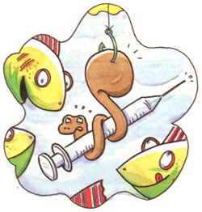

LAST LAUGH
Canadian air gives a lift to night crawlers and a weary job-hunter.
In show business, they call it "being between engagements." I've heard executives talk about "headhunters beating the bushes" for them. Me, I was just plain looking for a job-despite many months spent reading classifieds, scouring the Internet, sending e-mail and snail mail.
It was about that time that I got a postcard from my Uncle Charlie "Hap" Hazard. He has a cabin up above Sault Ste. Marie, Canada, six miles east of the Agawa Canyon.
"Come on up," was all he wrote.
"Why not?" I thought. Maybe I could use a dose of living close to nature.
It was during my first morning at Hap's that I learned about his sense of time. After breakfast, we began working on the roof of the cabin. Forty minutes later, we stopped for coffee and a donut. Forty minutes later, we paused again. When we had stopped for the fourth time before noon, I finally confronted my, uncle. "Can't we just work for a stretch? At this rate, we'll be at it all day."
"That's the point," Hap allowed. "We're not in a factory, where work starts and stops by shifts. What good would it do to work straight through till 4:30 and sit around for seven hours till bedtime?"
Later that evening, after 12 cups of coffee and the same number of snacks, I hardly had an appetite for Supper. "All those breaks still feel like a waste of time to me," I grumbled.
"Ha!" Hap practically barked. "You want to save time?" He worked his lips. He felt a joke coming on, and from past experience I knew that I could no more stop him than keep him from sneezing.
"You remind me of the city slicker who saw a farmer lifting a pig up to his shoulder so the pig could eat an apple off the tree.
'Excuse me,' the city dweller said. 'Could I make a suggestion?
The fanner just stared at him-the pig smacking his lips and leaning toward the next apple.
'You know, if you shook the tree, the apples would fall and the pig could just walk around and eat them off the ground.' The farmer just stared.
The city slicker nervously continued. 'So, at the very least, it would save time.'
The farmer spit and replied, 'Are you nuts or something? Pigs don't care about time."'
Hap raised his eyebrows, waiting for a reaction. I calmly asked for a second helping of apple sauce to go with my pork chops.
After dinner, I opened a box stacked near the fishing tackle. The box said disposable syringes. I held one out to Charlie as if to say, "What gives?"
"It was hell getting those things across the border." His lips started working-story coming. "The border guards picked me at random to do a thorough search. When they saw the needles, they went nuts. Somehow, they didn't believe me when I told them the syringes were for my hobby-fishing. So the next thing I know, I'm sitting in front of the chief inspector He's got this big salmon-35 pounds at leastmounted and hanging on the wall. I knew right then I was going to get off the hook, so to speak.
'Do what? To what? the inspector yelled, when I explained about injecting the night crawlers with air.
I suddenly remembered that Canadians call them dew worms. ox 'You blow up a dew worm's
behind with air,' I explained.
'Which end is the end?' the in- spector asked.
Now I was getting worried. Maybe I wasn't going to get off after all. 'The skinny end,' I said.
'Why?' the inspector asked.
'To make them float-like a long balloon. They float and the fish see them better.'
'And that's why you have a whole carton of syringes? To make worms float?'
'Uh, yeah,' I stammered.
'Why so many?' the custom guard baited me. 'Do you have to practice sterile technique? Throw the needle away after each use, eh?'
I shrugged. If he was needling me, maybe I was winning.
'Wouldn't want the worms to die of a needle-transmitted disease, now would we?' he goaded.
I shrugged again.
The burly inspector leaned forward on his desk and glared at me. 'What's the real reason you have a box of 12 syringes?'
'Because that's the only way they come. And really, it does help. Worms really have such low self esteem. This helps inflate their egos-if only for a brief moment. This is a chance to rise above their peers. To see and be seen. Their 15 minutes of glory.'
'Get out of here!' the border cop bellowed." Hap's mouth was twitching.
It took me a few days to get into Hap's rhythm. By the end of the ten days, I was mellow and ready to go back to my full-time job of finding a job.
At the train station, Uncle Hap handed me a syringe. "Just a souvenir," he joked. "In case you're feeling a little down, a little low. Remember the dew worms."
illustration: Smart Art/M.E. Cohen
|
 |
|
|